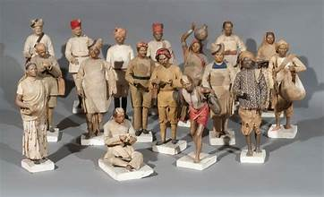

🎨✨ Art and Handicrafts of Assam – A Fusion of Tradition and Innovation 🖌️🧵
🖼️ Traditional Art Forms – Stories in Colors
Manipuri Art 🖼ï¸
Intricately designed with geometric motifs and vibrant colors, reflecting Assamese spirituality and folklore.
Assam Scroll Painting 🎨
Traditional scroll paintings that narrate stories of epics and folklore.
Painted with natural dyes on handmade paper.
Traditional scroll paintings that narrate stories of epics and folklore.
Painted with natural dyes on handmade paper.
Majuli Masks ğŸ
Handmade masks crafted by the artisans of Majuli.
Used in Bhaona performances and festivals.
Handmade masks crafted by the artisans of Majuli.
Used in Bhaona performances and festivals.
🪡 Handicrafts – Cultural Marvels of Assam
Bamboo and Cane Craft ğŸ‹
Intricate baskets, trays, and mats handcrafted from bamboo and cane.
Widely used in Assamese households.
Widely used in Assamese households.
Bell Metal Craft 🔔
Iconic bell metal utensils crafted with finesse.
Known for their durability and aesthetic appeal.
Iconic bell metal utensils crafted with finesse.
Known for their durability and aesthetic appeal.
Japi (Traditional Hat) 👒
Wide-brimmed conical hat made from bamboo and palm leaves.
Symbolizes Assamese identity and culture.
Symbolizes Assamese identity and culture.

Clay Toys 🧸
Artistic clay toys depicting folk tales and mythical creatures.
Often used during traditional Assamese celebrations.
Artistic clay toys depicting folk tales and mythical creatures.
Often used during traditional Assamese celebrations.
🧺 Weaving and Textiles – Threads of Legacy
Assam Silk Weaving 🧵
Muga, Eri, and Pat silk weaving known for its elegance and richness.
Traditional motifs add a unique charm to the fabrics.
Traditional motifs add a unique charm to the fabrics.

Gamosa 🧣
A traditional handwoven cloth with red and white patterns.
Symbolizes Assamese pride and respect.
Symbolizes Assamese pride and respect.
Mekhela Chador Weaving 🧶
Exquisite handwoven attire worn by Assamese women.
Combines elegance with cultural tradition.
Combines elegance with cultural tradition.
🛕 Stone and Metal Craft – Timeless Artistry
Hajo Bell Metal Craft 🛕
Beautiful bell metal artifacts crafted with ancient techniques.
Used in religious ceremonies and Assamese homes.
Used in religious ceremonies and Assamese homes.
Stone Carving ⛏️
Magnificent stone sculptures depicting Assamese heritage.
Found in ancient temples and monasteries.
Found in ancient temples and monasteries.
🸠Musical Instruments – Echoes of Assam’s Soul
Pepa ğŸº
A traditional buffalo hornpipe played during Bihu celebrations.
Produces rhythmic and lively tunes.
Produces rhythmic and lively tunes.
Dhol ğŸ¥
A traditional drum that sets the beat during Bihu festivals.
Its vibrant rhythms energize celebrations.
Its vibrant rhythms energize celebrations.
🧺 Eco-Friendly and Sustainable Crafts
Cane and Bamboo Crafts ğŸƒ
Beautiful eco-friendly items crafted from natural materials.
Supports sustainable livelihoods in rural Assam.
Supports sustainable livelihoods in rural Assam.
Pat Silk Weaving 🌾
Luxurious silk fabric known for its glossy texture.
Promotes eco-friendly weaving practices.
Promotes eco-friendly weaving practices.